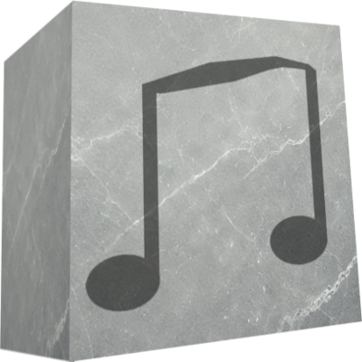

<!DOCTYPE html>
<html lang="en">

<head>
	<meta charset="UTF-8">
	<meta name="viewport" content="width=device-width, initial-scale=1.0">
	<link rel="stylesheet" href="./css/init.css">
	<link rel="stylesheet" href="./css/background.css">
	<link rel="stylesheet" href="./css/main.css">

	<link rel="stylesheet" href="./css/loadingpage_style.css">

	<link rel="stylesheet" href="./css/buttons.css">
	<link rel="stylesheet" href="./css/options.css">

	<link rel="stylesheet" href="./css/mainmenu_style.css">

	<link rel="stylesheet" href="./css/csnarr_style.css">
	<link rel="stylesheet" href="./css/narrative_specific/narr_0.css">

	<link rel="stylesheet" href="./css/chs_style.css">

	<link rel="stylesheet" href="./css/end_screens.css">

	<link rel="stylesheet" href="./css/aboutpage_style.css">

	<title>East-stonians - Demo</title>
</head>

<body>
	<div id="main-content"></div>
	<div id="meta-data"></div>
	<footer>
		<div class="options">
			<div id="sound-toggle" class="clickable">
				
			</div>
			<!-- <div id="pixelized-toggle" class="clickable">Pixelized: On</div> -->
		</div>
		<div class="author-area">
			east-stonians v0.7.1d by "Kriimsilmlane" paraIncog
		</div>
	</footer>
</body>

<script src="./scripts/game.js" type="module"></script>
<script src="./scripts/sounds.js" type="module"></script>

</html>